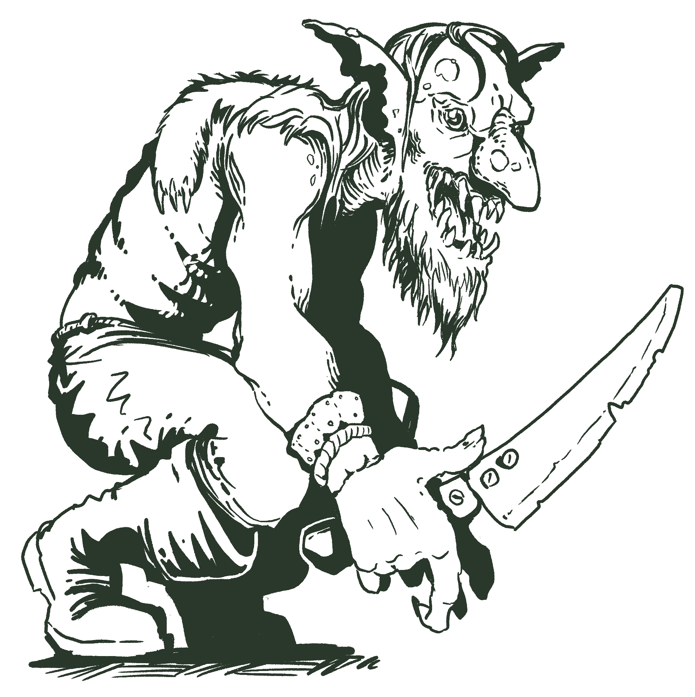
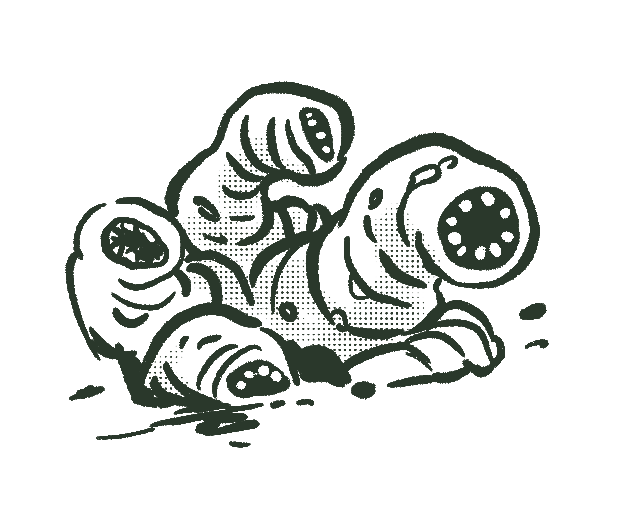
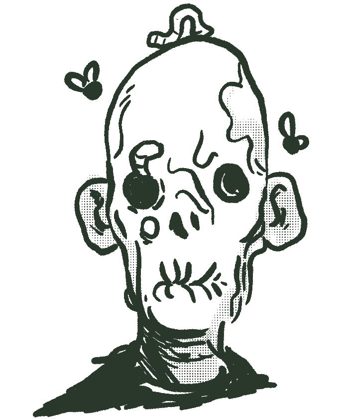

The Child-Stealers
The terror of the villagers in the Blacksalt island. They often kidnap babies in the night, turning them into goblins or worse. When angered they will raid villages kidnapping, killing and eating people. They are also called the forest folk, goblinfolk or goblins in general.
They are usually smaller than humans, with white skin covered in bumps and red spots, pointy ears and usually no hair. They have huge mouths with way too many pointy teeth.
They can't speak properly, their mouths are too wide and has no proper lips, they also lack of any social intelligence, but will say a few broken words. They don't talk to each other much, at least not with words, they will secrete some pheromones that will similar to how ants would. They are mostly guided by their instinct to create more goblins and gremlins from human children and to eat meat, including human meat. They do trade with each other, though, using human teeth as currency.
Goblin nests are rare and extremely well hidden, but tales are told of them. With their rituals they will turn each human into 6 or even more goblins, with livestock they can make at least 8 gremlins. Every goblin nest has at least one goblin matriarch, a special shaman that releases the spores that turn humans and animals into goblins.
Child-stealers will roam in the night since they can see in the dark. They avoid sun light but it won't hurt them.
Most of them worship Igra, the god of the woods but a few will workship Goshkalon, the god of laughter.
Gremlin - LVL 2
Wounds: 2, Armor: 1
Chew Armor(STR 1): Always destroys 1 armor point.
Tags: living, goblin
Extract: Flame
Gremlins are made from captured livestock, like cows or horses. They have wide mouths and are strangely attracted by machinery and will often eat machine parts, which is actually very unhealthy for them.
If they manage to eat fresh human meat, they will turn into a bugbear
Goblin Scrapper - LVL 2
Wounds: 3, Armor: 1
Knife in the gut(STR 1B+1).
Tags: living, goblin
Extract: Water
Boggart - LVL 3
Wounds: 3, Armor: 2
Serrated blade(STR 2+1).
Black shield: Add 1 shield token, may move Close.
Tags: living, goblin
Extract: Water

Bloodshot Goblin - LVL 4
Wounds: 4, Armor: 1
Frenzied! Has 3 actions per turn.
Wall climber, can walk on walls and ceiling.
Serrated teeth(STR 2+1).
Knife in the gut(STR 1B+1).
Unnatural regeneration: Heal 1 wound.
Tags: living, goblin
Extract: Flame
Hobgoblin - LVL 4
Wounds: 6, Armor: 2, Resist:1
Crude falchion(STR 2+1B).
Cracked shield: Add 2 shield tokens, if tokens are used, the shield is gone.
Tags: living, goblin
Extract: Water
Sack Man - LVL 5
Wounds: 7, Armor: 2, Resist:1
Unnatural regeneration: Heal 1 wound.
Tags: living, goblin
Extract: Ether
Bugbear - LVL 6
Wounds: 8, Armor: 2, Resist:1
Rend(-STR 2B+2).
Chew Armor(STR 1): Always destroys 1 armor point.
Tags: living, goblin
Extract: Flame
A feral gremlin that ate human flesh, oversized and always hungry. A bugbears are so unstable that event the goblins don't like to have them around.
Goblin Matriarch - LVL 3
Wounds: 5, Resist:1
Toxic spores! Every time the matriarch takes a hit she releases spores in the air, that add one stun marker to anyone close.
Controlling Gaze(INT 0): On hit add a stun marker.
Unnatural regeneration: Heal 1 wound.
Tags: living, goblin
Extract: Ether
A very old goblin shaman that has a special fungus growing on her back. Goblins will immobilize their victims and for weeks will force them to breath the spores and eat the fungus, turning them into goblins and gremlins.
Demons
All magic com from the void realm, a nightmare plane where all demons come from.

Lesser Demon - LVL 4
Wounds: 4, Armor: 2, Resist:1
Small and fast, add 1 difficulty to hit.
Bite(STR 2+1).
Tags: voidspawn
Extract: Flame
Void Demon - LVL 7
Wounds: 6, Resist:1
Terrifying! Cause terrified on hit.
Fly.
Incorporeal, can phase trough things, like iron bars.
Void whip(DEX 2R+1): Binds on hit, blocking move until a Recover action.
Fade: Add one shield and one dodge token. Move somewhere close.
Phase out: Becomes incorporeal, add 2 dodge tokens.
Tags: voidspawn
Extract: Flame
Vault Weaver - LVL 2
Wounds: 4, Resist:2
Fly.
Ignores morale, never flees, never dodges. Immune to PRE attacks.
Consume a corpse: and bloat, becoming a Red Weaver.
Silver tentacles(STR 2P).
Tags: voidspawn
Extract: Ether
Red Weaver - LVL 8
Wounds: 8, Resist:2
Fly.
Ignores morale, never flees, never dodges. Immune to PRE attacks.
Unnatural presence, everyone nearby is Nauseated while around it. Any ration will spoil and water will become tainted.
Silver Tentacles(STR 2P).
Pulse: A wave of pain, causing 1 Presence wound to everyone Close.
Tags: voidspawn
Extract: Ether
When a red weaver dies it will explode, launching all the corpses it ate all over the place. The corpses are perfectly preserved. The dead vigil can't set in on a corpse while inside the weaver.
Dungeon Scavengers
The dungeon ruins have corpses and rotting things all around. While humans avoid those places, they might just be what some creatures are looking for.

Plagued Rat - LVL 1
Wounds: 2
Small and fast, add 1 difficulty to hit.
Small bite(STR 2+1).
Tags: living
Extract: Rot
Rat King - LVL 2
Wounds: 6
For we are many, any damage is reduced to 2 wounds.
Many bites(STR 2+1).
The cries of many(PER-2 1): Hits everyone Close.
Tags: living
Extract: Rot
Giant Rat - LVL 3
Wounds: 5, Armor: 2
Jumpy! If the rat is hit by an attack, it can Move immediately.
Bite(STR 2+1).
Tags: living
Extract: Rot
Bloated Plague Rat - LVL 4
Wounds: 4
Explodes on death! Causing 2 wounds to everyone in the same tile, on a 2d! causes plague.
Venomous Spit(DEX 1): Causes nausea, adding a stun marker on 1d!
Tags: living
Extract: Rot

Swarm of Insects - LVL 2
Wounds: 3
Fly.
Swarm! Cannoot be harmed by regular weapons, only by fire or spells.
Ignores morale, never flees, never dodges. Immune to PRE attacks.
Drain(-DEX 1).
Tags: living
Extract: Rot
Rotworm Swarm - LVL 1
Wounds: 2
Too many of them, any damage is reduced to 1 wound.
Infest(PRE 1+1?): On critical one gets attached to you, causing 1 wound per turn until removed (1 action).
Tags: living
Extract: Rot
Ectoplasmic Worm - LVL 3
Wounds: 2, Resist:1
Immaterial, can move through walls.
Soul nibble(INT 2X): Cause a stun marker on hit.
Tags: ghost
Extract: Ether
Shore Creatures
Blacksalt isle sea is full of terrible creatures, some end up walking on the land and taking refuge in abandoned ruins.

Giant Leech - LVL 2
Wounds: 3
Surprisingly nutritive! Can be cooked in the camp phase as 1 ration. If you eat it become Nauseated.
Bite(STR 2): If causes a wound attach to adventurer. Caused Sleepy. Causes Bleeding until removed.
Tags: living
Extract: Ether
Giant Frog - LVL 3
Wounds: 6, Armor: 2
Sticky Tongue(DEX): On 2d! disarms the target Nearby.
Tongue Whip(STR 2).
Toxic spit(DEX 2): If caused at least 1 wound cause intoxicated.
Tags: living
Extract: Water
Giant Crab - LVL 5
Wounds: 9, Armor: 4, Resist:1
Can't chage direction while moving.
Grab(DEX): Picks up a player character that can now use all actions to test STR to break free or take 1 wound and be immobilized for this turn.
Eat(STR-2 5): Can only be used on a grabbed character.
Bash(STR-1 2): On hit moves the player character to an adjacent tile.
Tags: living
Extract: Water
The Undead
Once human bodies now brought back through the dead vigil.

Reanimated Husk - LVL 1
Wounds: 3
Ignores morale, never flees, never dodges. Immune to PRE attacks.
Crawls, uses 2 actions when moving.
No personal space, doesn't block other undead.
Infectious bite(STR 1+1): Causes Plagued on 1d!.
Tags: undead
Extract: Necro
Shrunken Corpse - LVL 3
Wounds: 3
Ignores morale, never flees, never dodges. Immune to PRE attacks.
Hard to hit! All tests to hit this enemy are made with disadvantage.
Nimble! Ignores combat movement penalty.
Tiny, 2 of them can occupy the same tile.
Throw Shiv(DEX 2).
Infectious bite(STR 1+1): Causes Plagued on 1d!.
Tags: undead
Extract: Necro
Slumbering Corpse - LVL 2
Wounds: 4, Armor: 1
Ignores morale, never flees, never dodges. Immune to PRE attacks.
Infectious bite(STR 1+1): Causes Plagued on 1d!.
Tags: undead
Extract: Necro
Freshly Risen Corpse - LVL 3
Wounds: 5, Armor: 1
Ignores morale, never flees, never dodges. Immune to PRE attacks.
Infectious bite(STR 1+1): Causes Plagued on 1d!.
Lunge(DEX 2, Nearby): Moves Close to the target and attack.
Tags: undead
Extract: Necro
Starved Cadaver - LVL 4
Wounds: 5
Ignores morale, never flees, never dodges. Immune to PRE attacks.
Nibble(STR 2): On a sucessful attack heal 1 wound.
Feast: 2 actions. Heal all wounds, consumes a corpse and becomes a Unsatiable Dead.
Unnatural regeneration: Heal 1 wound.
Tags: undead
Extract: Necro
Unsatiable Dead - LVL 5
Wounds: 6
Ignores morale, never flees, never dodges. Immune to PRE attacks.
Fast! Add a dodge token every turn.
Overgrown Claws(STR 3+1B).
Tags: undead
Extract: Necro
Rotting Sailor - LVL 5
Wounds: 7, Armor: 2
Ignores morale, never flees, never dodges.
Rusty Sword(STR 2).
Cursed Sea shanty: 2 actions, cause 1 non-lethal PRE wound on everyone.
Tags: undead
Extract: Necro
Bloated Screamer - LVL 6
Wounds: 9, Armor: 3
Ignores morale, never flees, never dodges. Immune to PRE attacks.
Acid pustules! Every time it takes one or more wounds, attack(STR 1) everyone Close.
Agony(PRE 2): Cries with cursed agony, hits everyone alive Nearby.
Tags: undead
Extract: Rot
Ghosts
The dead vigil affects even those that have no corpse left.
Shadow - LVL 4
Wounds: 3
Ethereal! Can only be hurt by magic, prayers or banish undead.
Rotting touch(PRE 2PR).
Tags: ghost
Extract: Ether